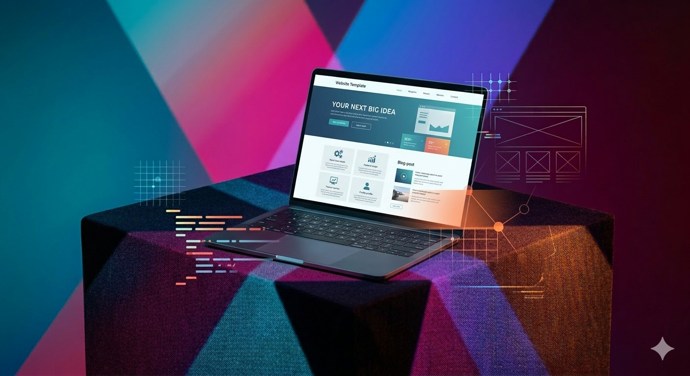

Fejlesztő vagyok, aki érti a vállalkozásod – nem csak a kódot.
Gazd aságinformatikus hallgatókent és aktiv IT projektmenedzserként olyan szemlélettel készítem weboldalakat, amelyek nem csak szépek – hanem működnek: pontosan azt közvetitítik, amit a látogatónak tudnia kell, és elvezetítik őt az ajánlatkérésig.

Háttér
Több mint egy frontend fejlesztő.
A mógottém álló tapasztalat segít abban, hogy a weboldalad ne csak kinződjek jól, hanem értelmes, stratégiailag felépített eszköz legyen a vállalkozásodnak.
IT projektmenedzser – éles környezetben
Jelenleg aktiv IT projektmenedzserként dolgozom, ahol komplex, piacképes informatikai rendszerek fejlesztését koordinálom. Tudom, hogyan néz ki egy működő digitális infrastruktúra belülről – és ezt a látásmódot hozom el minden weboldal projekthez.
100+ honlap tapasztalat
Olyan szervezetnél dolgozom, ahol több mint 100 honlapot üzelmeltetünk szervezéti szinten. Tudom miért omlik össze egy rosszul feltérképezett weboldal, miért nem konvertál egy skálázhatótlan struktúra – és hogyan kerülünk el ezeket.
Gazd aságinformatikus hallgató – jogi háttérrel
Az egyetemen gazd aságinformatikát tanulok, amiért a fejlesztési döntéseités mögött mindig üz leti logika is áll. A jogi alapok pedig hasznosak: értem az adatvédelem, a cookie-szabályzat és az általános online jogi kereteket, amivel az oldalad is védett lesz.
Design tanácsadás – nekélkülözhetetlen tippek
Nem csak lefejlesztem, amit kérsz – tippeket is adok, hogy mi nézne ki jól a célodnak megfelelően: milyen szinekbevezetés, milyen szekciósorrend, milyen CTA-szöveg, és hol veszít el látogatokat egy rosszul megirt oldalad.
Miben más?
Nem sablon – minden pixel a tied.
A WordPress, Wix és h as on ló rendszerek sablonokon alapszó megoldásokat kínálnak: gyors, olcsó, de soha nem teljesen a te igényeidre szabott. Minden módositásnak van egy pontja, ahol a sablon megallítja a fejlesztest.
Én nullaról építem fel a layoutot. A dizajn, az animációk, a szekciósorrend, a betűtípus, a színpaletta – mind az te vállalkozásodra van szabva. Ha el tudjuk képzelni, meg tudjuk csinálni. Nincs plugin-limit, nincs sablon-korrlát.
Kérj ajánlatot →| Tulajdonság | Sablon (WP/Wix) | websitemaker.hu |
|---|---|---|
| Teljesen egyedi design | ✗ | ✓ |
| Limitáció nélkül bővíthető | ✗ | ✓ |
| Gyors betöltés (nincs felesleges kód) | ✗ | ✓ |
| SEO-barát szemantikus HTML | ✗ | ✓ |
| Havi előfizetés nélkül | ✗ | ✓ |
| Design tanácsadás benne | ✗ | ✓ |
Ami még benne van
Több mint kód: SEO, domain és tanácsadás.
A weboldalad értelmét csak akkor tölti be, ha a megfelelő emberek megtalálják, és ha indulasra készen áll. Ebben is segítek.
SEO-optimalizlalt alap
Szemantikus HTML struktúrával, jól megirt meta tagekkel, alt szövegekkel és gyors betöltési idővel indíulunk. Ez az alap, amin a Google levíndéxelni fogja az oldalad. Keresore optim alálás nélkül az is elveszett, aki rákeres a nev edre.
Domain szerzésben is segítek
Nincs még domain neved? Segítek a megfelelő név kiválasztásában, a regisztrációban, és a Netlifyre való csatlakozt atásban. Nem kell egyagélül bolyongani a DNS beállításokközött.
Design tanácsadás – mi nézne ki jól?
Megmutatom, milyen színpaletta, tipográfia és szekció-felépítés működik a te iparágadban. Mi mutat profinak, mi riaszt el látogatókat – és mitől fog a céged az online térben is þg yeségesnek tűnni.
Adatvédelem és jogi alap
Jogi háttéremnek köszönhetően értem a GDPR, cookie-hozzajárulás és adatkezelési tájékoztató követelményeit. A weboldaladon ez sem marad ki – hanem beépítem.
Gyorsíság – mérhetően
Felesleges kód, nem használt CSS, lassitó pluginok – ezek egyike sincs benn egy készült oldalban. A Lighthouse score nem szégyenkezes, hanem biszke ség lesz.
Közvetlen elérhetőség
Nincs support ticket, nincs várólista. Írsz, és én válaszolok. Gyorsan, értelmes válasszal. A projektedért ugyanolyan lelkes vagyok, mint te.
Munkamódszer
Pontosan így néz ki egy projekt – lépésről lépésre.
Tudom, hogy győz előre nem tudni, mi vár. Ezért minden projekt elején lefektetjük a szabályokat: ki mit csinál, mikor, és hogyan kommunikálunk.
Előzetes érdeklődés és igényfelmérés
Elküldöd a rövid üzeneted a kapcsolat oldalon keresztül. Válaszolok 24 órán belül, és kérdezek a vállalkozásodról: mivel foglalkozol, kik a ügyfeleid, mik a céljaid az oldallal, van-e már domain, és mi a költésgvetés.
Struktúrátervezés és ajánlat
Az igényfelmérés után összerakok egy javaslatot: aloldalak száma és típusa, szekciók sorrendje, megközelítétt fejlesztési idő, és árajánlat. Indok lom is, hogy miért azt javaslom, amit javaslom.
Design irány meghatározása
Megbeszéljük a design irányt: színpaletta, hangulatv ilág, stilus (minimalista, modernebb, kőnyedebb). Előfordul, hogy megmutatok példa oldalakat iparágból, és bes zélgetünk róla, mi tetszik és mi nem.
Fejlesztés – nullaról, egyedileg
Hozzafágok az építéshez. Tiszta HTML, CSS, JS – sablon, page builder, tömörítetlen pluginkód nélkül. Minden sor a te weboldaladhoz írodott. Elkészülés után előnézetre kapod az oldalt.
Visszajelzés és finomhang olás
Megnézed az oldalt, visszajelzest adsz. Szabad kezű megjegyzések, pontjavítás ok, szövegmódosítások – mind bele fér. Addig csinálunk köröket, amíg nem vagy elégedett.
Élesítés – domain, hosting, deploy
Az elkészült oldalt GitHub-ra pusholom, Netlify-n élesitjük, és (ha szükséges) segítek a domain bekötésében is. A folyamat nem hét: már néhány óra alatt élhet az oldalad.
Hosszú távú támogatás
Az átadás után sem tűnök el. Új szekciók, árcsomagfrissítés, új szolgáltatás hozzáadása, technikai frissítés – kérheted később is. A weboldalad veled nő a vállalkozásoddal.
Elég volt az olvasásból – kezdjük el!
Irj egy rövid üzenetet, és egyeztetunk. Nincs kötelezettség, nincs előleg – csak egy beszélgetés.
Kapcsolatfelvétel →